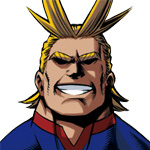

角色介绍（主角）
-
绿谷出久（みどりや いずく）
个性：One·for·All
英雄名：人偶
本作的主人公。世上相当罕见的天生“无个性”之人(第五世代)，对“英雄”有着无比狂热的执念，习惯将世上活动的英雄们（包括他的同学们）的能力与事迹用笔记本进行总结，因此对英雄相关的知识非常丰富。 -

欧尔麦特（オールマイト，All·Might）
本名 :八木 俊典（やぎ としのり）
个性：One·for·All
拥有刘海角似的两条线的金发，肌肉发达的男性。美漫画风（曾被出久等学生吐槽“他的画风和我们的不一样”）。年龄不详。